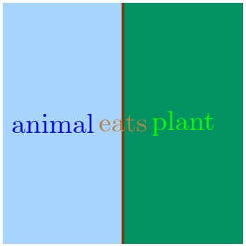
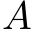
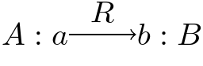
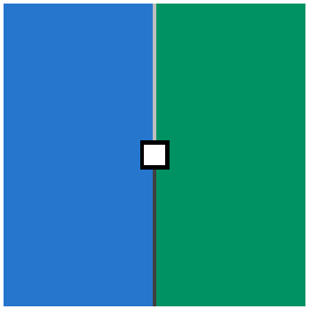
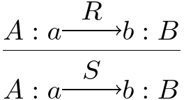
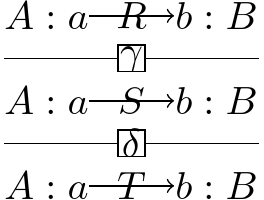
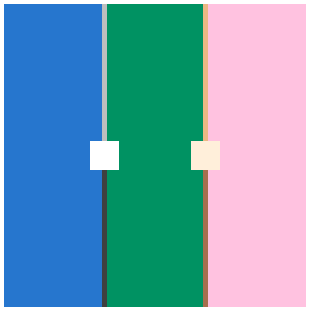
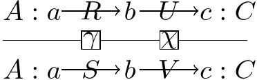

Thinking is two-dimensional.
| 0 | types | of stuff |  | drawn as colors |
 | animal |
| 1 | judgements | relate types | strings connect colors |
 | animal $a$ eats plant $p$ |
|
| 2 | inferences | transform judgements |  | beads connect strings |
 | if $a$ eats $p$ then $a$ gets $p$ |
When we reason, inferences compose in two ways: in sequence and in parallel.
| sequence |  | if $R$ then $S$ then $T$ |
|
| parallel |  |  | if $R\odot U$ then $S\odot V$ |